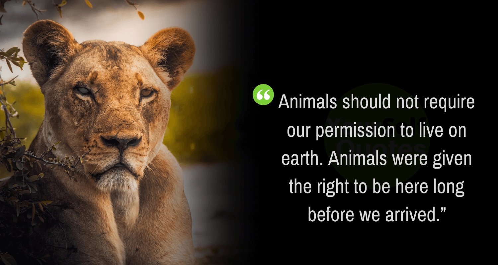
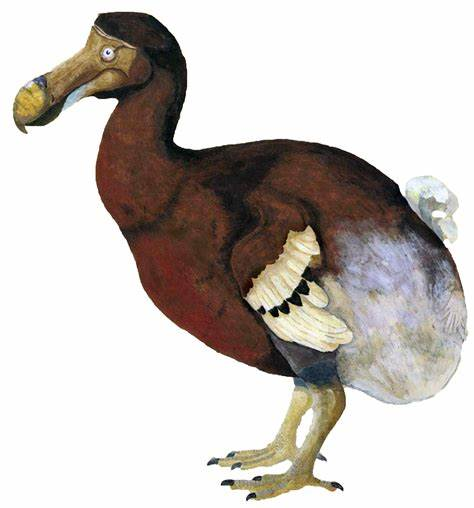

. Wildlife traditionally refers to non-domesticated vertebrates, but has come to broadly reference to all wild plants, animals and other organisms . Domesticating wild plant and animal species for human benefit has occurred many times all over the planet, and has a major impact on the environment, both positive and negative.
OUR PLANET’S WILDLIFE IS IN CRISIS
Wildlife is disappearing on every continent and in every ocean
The millions of different species on our planet are essential for so many of the most important things in our lives.
This complex web of life provides the natural systems we depend on – from clean air and water to fertile soils and a stable climate. It gives us food, medicines and materials, and supports millions of jobs. And it also inspires us, making our lives richer in so many ways.
But our planet’s wildlife is in crisis – numbers have fallen by more than half since 1970, and species are becoming extinct at an alarming rate.
OUR WILDLIFE'S FATE IS IN THE HANDS OF JUST ONE SPECIES: HOMO SAPIENS
Human activities threaten wildlife in two main ways: by destroying and damaging the places where wildlife lives, and by using them in ways that are unsustainable.
Meanwhile, many species are declining because of unsustainable levels of hunting, fishing and harvesting. Others are being driven toward extinction to support the international wildlife trade, or killed when they come into direct conflict with humans and livestock.
THE WILDLIFE CRISIS IN NUMBERS
WWF’s Living Planet Report, published every two years with our partner ZSL, is a scientific study of biodiversity and the health of our amazing planet. Since 1998, it has been charting the devastating impacts human activities are having on the world’s wildlife and natural world.

WE CAN TURN THINGS AROUND
Tiger numbers are increasing for the first time in over a century, the Irrawaddy dolphin population is rising after decades of decline, and more and more countries in Asia are banning sales of elephant ivory.
People have benefited too. Protecting forests and other crucial habitats helps conserve the natural living resources that many communities depend on. Sensitively managed eco-tourism is also bringing much needed income to many developing countries.
These are positive signs and are helping to put us on the right path to a brighter future for people and nature. But we need to do much more to halt and reverse the decline in the world’s wildlife. Ultimately, our own well-being and survival depend upon it.
Extinct Animals
Animal extinctions may be caused by natural occurrences such as climatic heating or cooling or changes in sea levels.
Passenger Pigeon
Native to North America, the Passenger or Wild Pigeon has been extinct since the early 20th century. It is estimated that between 3 and 5 billion Passenger Pigeons inhabited the US when Europeans arrived in North America, but their settlement led to mass deforestation resulting in habitat loss and a reduction in the bird population. By the 19th century pigeon meat was commercialized as a cheap food for the poor, which resulted in hunting on a massive scale. The Passenger Pigeon died out in the wild by around 1900, with the last known individual dying in captivity in 1914.
Stellers Sea Cow
Named after George Steller, a naturalist who discovered the creature in 1741, Stellers Sea Cow was a large herbivorous mammal. It is believed that Stellers Sea Cow which grew to at least 8-9 metres and weighed around 8-10 tons, inhabited the Near Islands, southwest of Alaska and the Commander Islands in the Bering Sea. It is believed that the mammal was tame and spent most of its time eating kelp; this, and the fact that it was unable to submerge its enormous body, is possibly what made it vulnerable to human hunters. Within 27 years of discovery by Europeans, Steller’s Sea Cow was hunted to extinction.
Tasmanian Tiger
Native to Australia, Tasmania and New Guinea, the Tasmanian Tiger was a large carnivorous marsupial. Not related to tigers, the creature had the appearance of a medium-to-large-size dog (it weighed 30kg with a nose to tail length of almost 2 metres) but dark stripes gave it a tiger-like appearance. It is believed to have been hunted to extinction – this was encouraged by bounties – but human encroachment into its habitat, the introduction of dogs and disease could also have contributed. The last wild Tasmanian Tiger was killed between 1910 and 1920, with the last captive one dying in Hobart Zoo, Tasmania in 1936.
Great Auk
A large and flightless bird found in the North Atlantic and as far south as Northern Spain. It had an average height of 75-85 cm and weighed about 5kg. The Great Auk was a powerful swimmer which helped it to hunt underwater for food. The last colony of Auks lived on the island of Eldey and by 1835 they had all been killed. The last of these birds was killed by three men who caught it on St Kilda, Scotland in 1844. When a large storm surged, they believed that the auk was a witch and was causing the storm, so they killed it.
Dodo
An extinct flightless bird that inhabited Mauritius, the Dodo was about one metre tall and may have weighed 10–18 kg. The only account we have of the Dodo’s appearance is through varied illustrations and written accounts from the 17th century so its exact appearance remains unresolved. It is presumed the bird became flightless due to the availability of abundant food sources (seeds, roots and fallen fruits) and a relative absence of predators. The bird was hunted to extinction by sailors and their domesticated animals, and invasive species. The last widely accepted sighting of a Dodo was in 1662.

Woolly Mammoth
An enormous mammal, believed to be closely related to the modern-day elephant. Its ancestors migrated out of Africa about 3.5 million years ago, spreading across northern Eurasia and North America. ThThey were covered in fur and their curved tusks could easily be up to 5 metres long! The Woolly Mammoth eventually disappeared 10,000 years ago through a combination of hunting by humans and the disappearance of its habitat through climate change. The last of the isolated woolly mammoth populations is believed to have vanished from Wrangel Island in the Arctic Ocean around 1700BC.
Endangered Animals
An endangered species is a species that is very likely to become extinct in the near future, either worldwide or in a particular political jurisdiction.
giant panda
Everyone loves a panda…they might be the kitschiest animal humanity has driven to the brink of extinction yet. China, which is home to the remaining wild population of fewer than 2,500 individuals, has since the late 1980s instituted more stringent habitat protections and poaching has all but ceased. Their status is still tenuous, though.
tiger (Panthera tigris)
William Blake’s “forests of the night,” the stalking grounds of the six subspecies of tiger, are burning bright. Slash-and-burn agriculture, along with logging, and human encroachment, have hugely diminished the habitat available to these felines, which require extensive ranges capable of supporting the large herbivores that constitute the bulk of their diets.
whooping crane (Grus americana)
Today, there are over 400 birds, thanks in large part to innovative breeding programs. Though a plan that involved transferring whooping crane eggs to the nests of related sandhill cranes for fostering ultimately failed, captive rearing and reintroduction have established two wild populations in Florida, one of which has been taught to migrate to Wisconsin
blue whale (Balaenoptera musculus)
There are fewer than 25,000 blue whales, the largest animals on the planet. Comprising several subspecies, blue whales are found in all of the world’s oceans save the Arctic. The current population is thought to have been reduced by up to 90% by whaling in the 20th century.
Asian elephant (Elephas maximus)
The IUCN’s best guess on the current population of Asian elephants, which inhabit 13 countries, is around 40,000–50,000. That number may be far lower; some regions inhabited by the lumbering pachyderms are inaccessible due to the terrain or to political volatility. Over 50% of the population is concentrated in India.